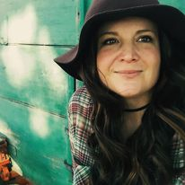

Here's a photo of my crew.

I am a student in Environmental Science and GIS at MSU Denver . I worked for CIRES the (Cooperative Institute for Research in Environmental Sciences) during the summer 2020 and 2021 breaks. In 2020, I worked for a team that studied geologic impacts on long timescale climate change. In 2021, I worked with evolutionary biologists and geophysicists to study microbehaviors in response to changes in Earth's geomagnetic fields caused by solar storms and flares. Both projects involved GIS Mapping and learning exciting new aspects of science!
| Fall 2021 | Spring 2022 |
|---|---|
| Web Mapping | Statistics |
| Global Environmental Challenges | GIS undetermined |
| Cultural Anthropology | GIS undetermined |
One of my favorite quotes is by Russian geologist Vladamir Verdnasky. In describing life and the biosphere as simply a large circular exchange of chemicals and matter, he stated,
"Living matter is a specific kind of rock...an ancient, and at the same time, an eternally young rock. The purpose of animals and their movement is to assist the winds and waves, to stir the brewing biosphere."
Here's a photo of my crew.
And here's a photo of me working at the Boggsville Historic Site
